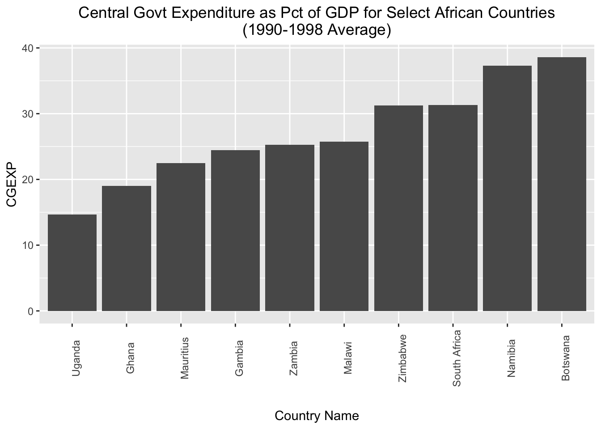
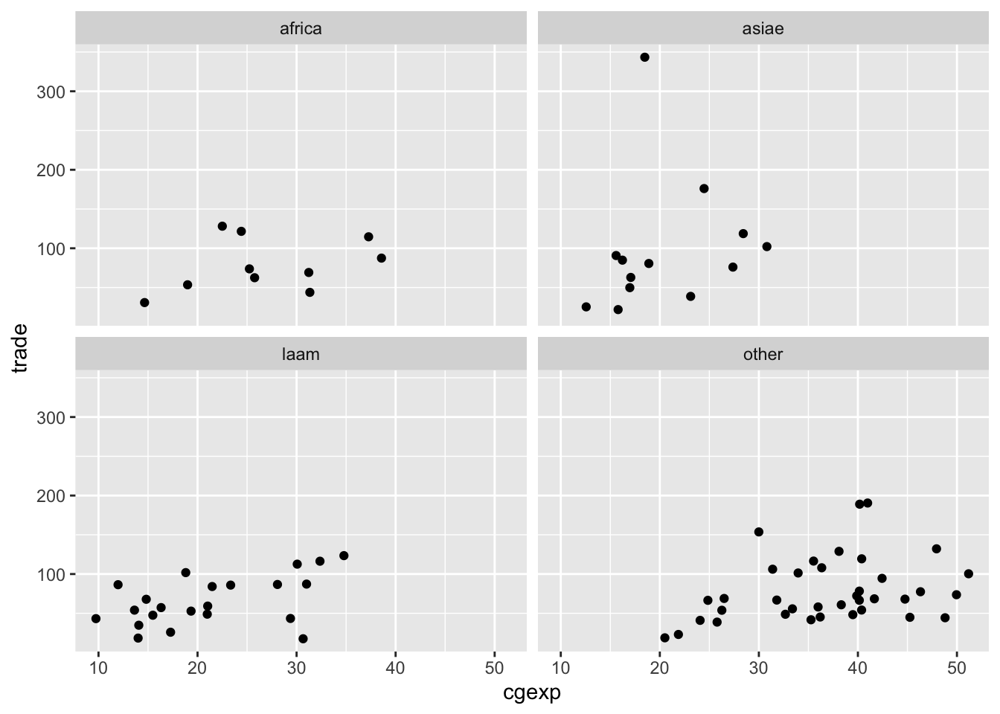
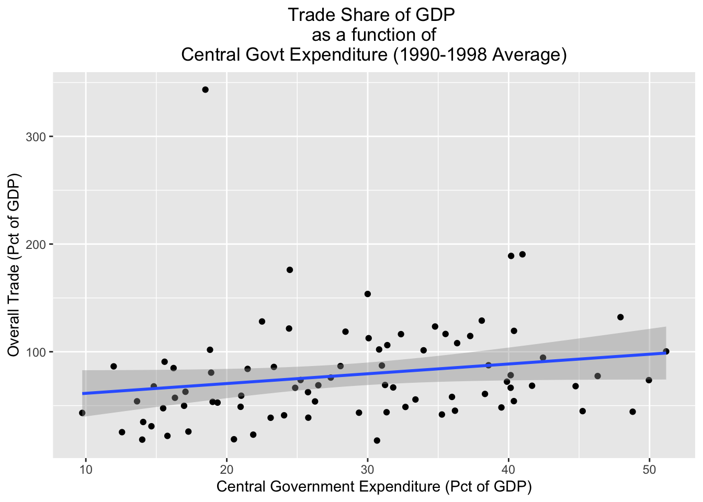
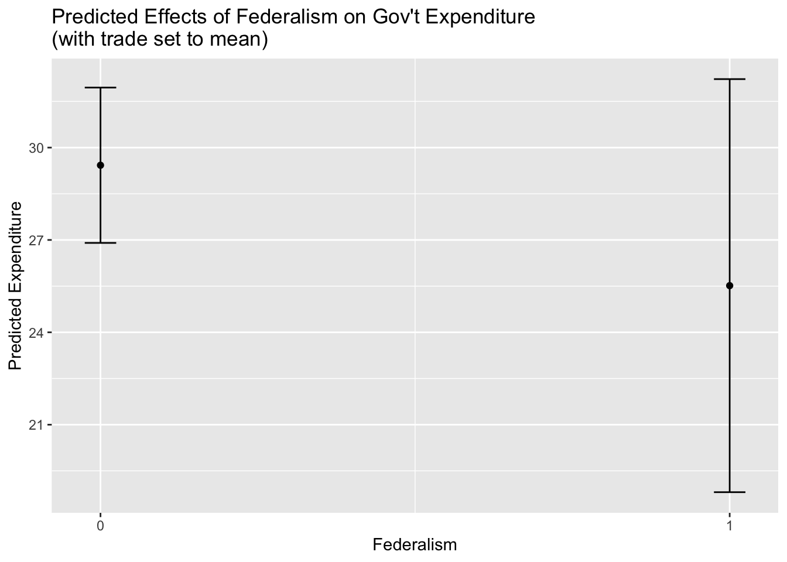

# load libraries
library(tidyverse)
library(psych)
library(janitor)
library(fastDummies)
library(janitor)
library(summarytools)
library(stargazer)
library(gtsummary)
library(ggeffects)Analyzing, Integrating, and Visualizing Data in R
1 Introduction
In this session we’ll cover the following topics:
Basic analysis (correlations and regressions)
Exploratory visualization with ggplot2
Integrating and working with multiple datasets (i.e. joining, appending, reshaping, iteratively processing)
Exporting data out of R
We will continue working with the Persson-Tabellini dataset. We will also work with some World Bank datasets that you should have downloaded yesterday. Please load all of the libraries you loaded yesterday:
2 Preliminaries
Please go ahead and set your working directory, read in the Persson-Tabellini dataset and assign it to an object named pt, and then make a copy that you can use in this session:
# reads in PT data into R
pt<-read_csv("data/pt/persson_tabellini_workshop.csv")Rows: 85 Columns: 75
── Column specification ────────────────────────────────────────────────────────
Delimiter: ","
chr (2): country, continent
dbl (73): oecd, pind, pindo, ctrycd, col_uk, t_indep, col_uka, col_espa, col...
ℹ Use `spec()` to retrieve the full column specification for this data.
ℹ Specify the column types or set `show_col_types = FALSE` to quiet this message.# makes dataset copy
pt_copy<-pt3 Visualization with ggplot2
In this section, we’ll discuss how to use ggplot2 to visualize our data. ggplot2 is the tidyverse’s visualization package, and is rooted in a framework known as the “grammar of graphics” (in fact, the “gg” in ggplot2 stands for “grammar of graphics”). The basic idea behind the grammar of graphics is that we create visualizations by layering different elements on top of each other. For example, the foundational layer is the data used to create the plot. Another element layered on top of the data is a visualization’s aesthetic (often referred to as “aes”), which specifies how the underlying data is mapped onto the visual properties of the visualization. For example, features like color, size, and shape can be used to distinguish different groups or points in the data, and are considered part of the aesthetic layer. On top of the data and aesthetics, we can layer geometries, which specify how the data is represented in terms of visual geometries (i.e. points, lines, bars etc.). Other elements include themes, which refer to properties of the plot that are not directly tied to the plot (such as background color, text positioning, and font sizes), but which can meaningfully shape the visualization’s appearance and a viewer’s ability to engage with it. The syntax of ggplot2 corresponds to the concept of the grammar of graphics; different functions correspond to different “layers” in the grammar of graphics, and are layered on top of each other with a “+” sign, building out the visualization element by element.
ggplot2 is a remarkable package, and builds on R’s prior strengths as a data visualization platform. It’s possible to make beautiful visualizations using ggplot2, but our focus here will be on getting acquainted with the basic syntax of the package, and making some quick exploratory visualizations based on data from the pt_copy dataset.
3.1 Bar Charts
Let’s start by making some simple bar charts for the African countries in pt_copy. Let’s say we want to make a bar chart that displays variation in the “cgexp” variable (central government expenditure as a share of GDP) for African countries. We’ll begin by extracting the Africa observations from pt_copy using the filter() function, and removing any “NA” observations for this variable from the dataset using the drop_na() function:
# filters Africa observations
pt_africa<-pt_copy %>%
filter(continent=="africa") %>%
drop_na(cgexp)Now, let’s make a basic bar chart of the “cgexp” data from pt_africa, and assign it to an object named cgexp_africa:
# Creates a bar chart of the "cgexp" variable (central government expenditure as a share of GDP) for the Africa observations and assigns the plot to an object named "cgexp_africa"
cgexp_africa<-
ggplot(pt_africa)+
geom_col(aes(x=country, y=cgexp))+
labs(
title="Central Govt Expenditure as Pct of GDP for Select African Countries (1990-1998 Average)",
x="Country Name",
y="CGEXP")+
theme(plot.title=element_text(hjust=0.5),
axis.text.x = element_text(angle = 90))Let’s unpack the code above:
- The expression
ggplot(pt_africa)specifies that we want to initialize ggplot, and declares the dataset containing the data we want to map (“pt_africa”) geom_col()indicates that we want to make a bar chart. If you wanted to make a different type of chart, this function would be different. Within thegeom_col()function, we indicate our desired aesthetic mappingaes(); an aesthetic mapping indicates how we would like variables in the datasets to be represented on the chosen visualization. Here, the expressionx=country, y=cgexpsimply indicates that we want countries to be represented on the x-axis of the chart, and the “cgexp” variable to be represented on the y-axis.- The arguments to the
labs()function (short for “labels”) specify a desired title for the visualization, and x-axis and y-axis labels. - The arguments to the
theme()function specify a desired position for the plot title, and a desired format for the x-axis labels.
Let’s see what cgexp_africa looks like:
# prints contents of cgexp_africa
cgexp_africaThis is a nice start, but it may look a bit cleaner if we arrayed the chart in ascending order with respect to the cgexp variable. To do so, we can slightly change our aesthetic mapping to look like this: aes(x=reorder(country, cgexp), y=cgexp)). This indicates that we’d still like the “cgexp” variable on the y-axis, and countries on the x-axis; however, we’d also like to order countries in ascending order with respect to the “cgexp” variable. We’ll also lower the X-axis label a bit, to make it less crowded; we can do so with axis.title.x=element_text(margin=margin(t=20). We’ll assign this modified chart to a new object named cgexp_africa_ascending:
# Creates a bar chart of the "cgexp" variable (central government expenditure as a share of GDP) for the Africa observations; countries are on the x axis and arrayed in ascending order with respect to the cgexp variable, which is on the y-axis; plot is assigned to an object named "cgexp_africa_ascending"
cgexp_africa_ascending<-
ggplot(pt_africa)+
geom_col(aes(x=reorder(country, cgexp), y=cgexp))+
labs(
title="Central Govt Expenditure as Pct of GDP for Select African Countries (1990-1998 Average)",
x="Country Name",
y="CGEXP")+
theme(plot.title=element_text(hjust=0.5),
axis.text.x = element_text(angle = 90),
axis.title.x=element_text(margin=margin(t=20)))All other apsects of the code are the same as before. Let’s see what the modified chart looks like:
# prints "cgexp_africa_ascending"
cgexp_africa_ascending
If, instead of arranging the countries in ascending order with respect to the “cgexp” variable, we want to arrange them in descending order, we can simply put a “-” before “cgexp” within the aesthetic mapping; we’ll assign the modified chart to a new object named cgexp_africa_descending:
# Creates a bar chart of the "cgexp" variable (central government expenditure as a share of GDP) for the Africa observations; countries are on the x axis and arrayed in descending order with respect to the cgexp variable, which is on the y-axis; plot is assigned to an object named "cgexp_africa_descending"
cgexp_africa_descending<-
ggplot(pt_africa)+
geom_col(aes(x=reorder(country, -cgexp), y=cgexp))+
labs(
title="Central Govt Expenditure as Pct of GDP for Select African Countries (1990-1998 Average)",
x="Country Name",
y="CGEXP")+
theme(plot.title=element_text(hjust=0.5),
axis.text.x = element_text(angle = 90),
axis.title.x=element_text(margin=margin(t=20)))Let’s see how the cgexp_africa_descending plot now looks:
# prints contents of "cgexp_africa_descending"
cgexp_africa_descendingSometimes, you may wish to invert the axes of your charts, which you can do using the coord_flip() function. The code below takes the cgexp_africa_ascending chart we created above, inverts the axes using coord_flip(), and assigns the result to a new object named cgexp_africa_ascending_inverted:
# creates a sideways bar chart using the "coord_flip" function and assigns it to a new object named "cgexp_africa_ascending_inverted"
cgexp_africa_ascending_inverted<-cgexp_africa_ascending+
coord_flip()# prints "cgexp_africa_ascending_inverted"
cgexp_africa_ascending_invertedWhen we use coord_flip() in ggplot2 it flips the axes (i.e. the x-axis becomes the y-axis and vice versa). As a result, the (now) x-axis labels in cgexp_africa_ascending_inverted are difficult to read, and need to be adjusted. We can do so by modifying the “axis.text.x” argument within the theme() function:
# fixes x axis labels
cgexp_africa_ascending_inverted<-cgexp_africa_ascending_inverted+
theme(axis.text.x = element_text(angle = 0))Let’s see what the plot looks like now:
# prints contents of "cgexp_africa_ascending_inverted"
cgexp_africa_ascending_inverted3.2 Scatterplots
The syntax to make a scatterplot is fairly similar to the syntax used to create a bar chart; the main difference is that instead of using the geom_col() function to indicate that we want a bar chart, we use the geom_point() function to indicate that we want a scatterplot. We will be creating scatterplots of the “cgexp” and “trade” variables, so we’ll start by cleaning pt_copy to prepare it for visualization. In particular, we’ll remove NA values for these two variables, and assign this version of the dataset to an object named pt_copy_cleaned:
# removes rows with NA values for "cgexp" and "trade; assigns cleaned dataset to object named "pt_copy_cleaned"
pt_copy_cleaned<-pt_copy %>% drop_na(cgexp, trade)Now, we’re ready to make our scatterplot. The code below generates a scatterplot of the “cgexp” variable (on the x axis) and the “trade” variable (on the y-axis) for all observations in the pt_copy dataset, and assigns it to a new object named scatter_cgexp_trade:
# Creates scatterplot with "cgexp" variable on x-axis and "trade" variiable on y-axis and assigns to object named "scatter_cgexp_trade"
scatter_cgexp_trade<-
ggplot(pt_copy_cleaned)+
geom_point(aes(x=cgexp, y=trade))+
labs(title="Trade Share of GDP \nas a function of\n Central Govt Expenditure (1990-1998 Average) ",
x="Central Government Expenditure (Pct of GDP)", y="Overall Trade (Pct of GDP)")+
theme(plot.title=element_text(hjust=0.5)) Let’s see what scatter_cgexp_trade looks like:
# prints contents of "scatter_cgexp_trade"
scatter_cgexp_tradeSometimes, we may wish to distinguish between different groups in a scatterplot. One way to do that is to assign different colors to different groups of interest. For example, if we wanted to distinguish continents in the scatterplot, we could specify color=continent in the aesthetic mapping. The code below does so, and assigns the result to a new object named scatter_cgexp_trade_grouped:
# Creates scatterplot with "cgexp" variable on x-axis and "trade" variable on y-axis, and uses different color points for different continents; plot is assigned to object named "scatter_cgexp_trade_grouped"
scatter_cgexp_trade_grouped<-
ggplot(pt_copy_cleaned)+
geom_point(aes(x=cgexp, y=trade, color=continent))+
labs(title="Trade Share of GDP \nas a function of\n Central Govt Expenditure (1990-1998 Average) ",
x="Central Government Expenditure (Pct of GDP)", y="Overall Trade (Pct of GDP)")+
theme(plot.title=element_text(hjust=0.5)) Let’s see what scatter_cgexp_trade_grouped looks like:
# prints contents of "scatter_cgexp_trade_grouped"
scatter_cgexp_trade_groupedAn alternative way of parsing categories is to use facets, which create separate visualizations for each of the different categories in a dataset. Below, for example, we create separate scatterplots for each continent (this is specified by the final line in the code, facet_wrap(~continent, nrow=2)):
# Creates continent-level subplots for scatterplot, using facets; assigns plot to new object named "scatter_cgexp_trade_facets"
scatter_cgexp_trade_facets<-
ggplot(pt_copy_cleaned) +
geom_point(aes(x = cgexp, y = trade)) +
facet_wrap(~ continent, nrow = 2)Let’s print the contents of scatter_cgexp_trade_facets:
# prints "scatter_cgexp_trade_facets"
scatter_cgexp_trade_facets
Finally, it’s important to note that it’s possible to layer different geometries over each other. For example, the code below plots a scatterplot for the pt_copy dataset with the “cgexp” variable on the x axis and the trade variable on the y-axis, but also plots a line of best fit on top of the scatterplot with geom_smooth(aes(x=cgexp, y=trade), method="lm"); we’ll assign the resulting plot to scatter_cgexp_trade_line:
# Creates scatterplot with "cgexp" variable on x-axis and "trade" variiable on y-axis, adds line of best fit; plot assigned to object named "scatter_cgexp_trade_line"
scatter_cgexp_trade_line<-
ggplot(pt_copy_cleaned)+
geom_point(aes(x=cgexp, y=trade))+
geom_smooth(aes(x=cgexp, y=trade), method="lm")+
labs(title="Trade Share of GDP \nas a function of\n Central Govt Expenditure (1990-1998 Average) ",
x="Central Government Expenditure (Pct of GDP)", y="Overall Trade (Pct of GDP)")+
theme(plot.title=element_text(hjust=0.5)) Let’s see what it looks like:
# Prints contents of "scatter_cgexp_trade_line"
scatter_cgexp_trade_line`geom_smooth()` using formula = 'y ~ x'
4 Elementary Data Analysis
In this section, we’ll review some functions that can implement some basic data analysis tasks. Our focus is not on the methodologies themselves, or deeper questions about drawing inferences from data and the appropriateness of various models in different contexts. Our goal is simply to provide you with a tour of how to implement some standard statistical procedures in R; if you continue to use R, you will quickly come to appreciate the enormous resources if offers for statistical work. Here, we only have time to barely scratch the surface.
4.1 Computing Correlations
4.1.1 Computing a correlation coefficient
We can compute a basic correlation coefficient using the core.test() function:
# computes correlation coefficient between "trade" and "cgexp" variables and assigns the result to a new object named "trade_cgexp_cc"
trade_cgexp_cc<-cor.test(pt_copy$trade, pt_copy$cgexp)# prints results of "trade_cgexp_cc"
trade_cgexp_cc
Pearson's product-moment correlation
data: pt_copy$trade and pt_copy$cgexp
t = 1.8131, df = 80, p-value = 0.07356
alternative hypothesis: true correlation is not equal to 0
95 percent confidence interval:
-0.01915884 0.39850057
sample estimates:
cor
0.1986743 We can format this more cleanly using the tidy() function from the broom package (part of the tidyverse:
# cleans up formatting of "trade_cgexp_cc"
broom::tidy(trade_cgexp_cc)# A tibble: 1 × 8
estimate statistic p.value parameter conf.low conf.high method alternative
<dbl> <dbl> <dbl> <int> <dbl> <dbl> <chr> <chr>
1 0.199 1.81 0.0736 80 -0.0192 0.399 Pearson's… two.sided We can assign this neater version of the model output to a new object named trade_cgexp_cc_clean:
# assigns well-formatted model output to "trade_cgexp_cc_clean"
trade_cgexp_cc_clean<-broom::tidy(trade_cgexp_cc)4.1.2 Generating a correlation matrix
To generate a correlation matrix, we can use the cor() function. First, we’ll select the variables we want to examine:
# generating a correlation matrix
# Extracts variables for which we want a correlation matrix
desired_variables<-pt_copy %>% select(trade, cgexp, cgrev, catho80)Now, we can pass desired_variables as an argument to the cor() function, and assign it to a new object named cor_matrix:
# Creates correlation matrix from "desired_variables" object and assigns to object named "cor_matrix"
cor_matrix<-cor(desired_variables, use="complete.obs")# prints contents of "cor_matrix"
cor_matrix trade cgexp cgrev catho80
trade 1.00000000 0.1792884 0.3458730 -0.08442666
cgexp 0.17928838 1.0000000 0.9094998 -0.07010910
cgrev 0.34587298 0.9094998 1.0000000 -0.05923500
catho80 -0.08442666 -0.0701091 -0.0592350 1.000000004.2 Basic Regression Models
4.2.1 Bivariate Regression
We can run a linear regression model in R using the lm() function, where the first argument is the dependent variable, and the independent variables appear after the ~ that follows the dependent variable. We must also specify what data is being modeled using the data argument. Below, we’ll calculate a simple bivariate regression using pt_copy, where the independent variable is “cgexp” (central goverment expenditure), and the independent variable is “trade” (as a share of GDP). We’ll assign the output of the model to a new object named regression1:
# implements bivariate regression with "gexp" as DV and "trade" as IV; assigned to "regression1" object
regression1<-lm(cgexp~trade, data=pt_copy)We can view the regression output by passing the object to the summary function:
# prints output of "regression1"
summary(regression1)
Call:
lm(formula = cgexp ~ trade, data = pt_copy)
Residuals:
Min 1Q Median 3Q Max
-21.851 -8.559 -1.207 7.243 21.471
Coefficients:
Estimate Std. Error t value Pr(>|t|)
(Intercept) 25.40556 2.20151 11.540 <2e-16 ***
trade 0.04347 0.02398 1.813 0.0736 .
---
Signif. codes: 0 '***' 0.001 '**' 0.01 '*' 0.05 '.' 0.1 ' ' 1
Residual standard error: 10.34 on 80 degrees of freedom
(3 observations deleted due to missingness)
Multiple R-squared: 0.03947, Adjusted R-squared: 0.02746
F-statistic: 3.287 on 1 and 80 DF, p-value: 0.073564.2.2 Multivariate Regression
The process for multivariate regression is much the same as for bivariate regression; we simply add the additional independent variables after with a “+” sign. Below, we compute a regression with additional covariates and assign it to the object named regression2:
# Implements regression with "gexp" as DV, and assigns to object named "regression1"
regression2<-lm(cgexp~gastil+lyp+trade+prop1564+prop65+federal+oecd, data=pt_copy)Now, we can print out model output using the summary function:
# prints output of "regression2"
summary(regression2)
Call:
lm(formula = cgexp ~ gastil + lyp + trade + prop1564 + prop65 +
federal + oecd, data = pt_copy)
Residuals:
Min 1Q Median 3Q Max
-12.9861 -4.6981 -0.5521 4.4482 16.1124
Coefficients:
Estimate Std. Error t value Pr(>|t|)
(Intercept) 52.17290 16.08572 3.243 0.00179 **
gastil -2.15202 1.10609 -1.946 0.05561 .
lyp -2.04441 2.00721 -1.019 0.31184
trade 0.04978 0.01924 2.587 0.01170 *
prop1564 -0.28482 0.26686 -1.067 0.28939
prop65 1.58627 0.33548 4.728 1.09e-05 ***
federal -4.58101 2.38015 -1.925 0.05822 .
oecd 0.96969 2.97171 0.326 0.74514
---
Signif. codes: 0 '***' 0.001 '**' 0.01 '*' 0.05 '.' 0.1 ' ' 1
Residual standard error: 7.064 on 72 degrees of freedom
(5 observations deleted due to missingness)
Multiple R-squared: 0.5865, Adjusted R-squared: 0.5463
F-statistic: 14.59 on 7 and 72 DF, p-value: 1.137e-114.2.3 Categorical Variables in a Regression Model
If you want to add categorical variables to a regression model, you can directly include variables that are of the class “character” without running into any issues. Under the hood, R will convert those character variables into dichotomous variables, and calculate the regression coefficients and standard errors accordingly. To see this, let’s try adding the “continent” variable to regression2 above. First, we’ll confirm that the “continent” variable is of the character class:
# prints class of "continent" variable
class(pt_copy$continent)[1] "character"Now, we’ll put it into the regression model from regression2, and assign the output to a new object named regression3:
# adds "continent" categorical variable to previously run "regression2" model; output of model assigned to object named "regression3"
regression3<-lm(cgexp~gastil+lyp+trade+prop1564+prop65+federal+oecd+continent, data=pt_copy)Let’s now look at the model output:
# opens model output of "regression3"
summary(regression3)
Call:
lm(formula = cgexp ~ gastil + lyp + trade + prop1564 + prop65 +
federal + oecd + continent, data = pt_copy)
Residuals:
Min 1Q Median 3Q Max
-14.0866 -4.7622 -0.6861 4.0823 16.9440
Coefficients:
Estimate Std. Error t value Pr(>|t|)
(Intercept) 43.35764 16.04158 2.703 0.00865 **
gastil -2.22031 1.09801 -2.022 0.04704 *
lyp 0.19365 2.02437 0.096 0.92407
trade 0.03516 0.01901 1.849 0.06868 .
prop1564 -0.28713 0.26498 -1.084 0.28231
prop65 0.89189 0.43407 2.055 0.04369 *
federal -4.41605 2.26113 -1.953 0.05487 .
oecd -2.58250 3.04127 -0.849 0.39873
continentasiae -5.22677 3.19253 -1.637 0.10614
continentlaam -6.96177 2.93306 -2.374 0.02041 *
continentother 2.17697 4.39537 0.495 0.62197
---
Signif. codes: 0 '***' 0.001 '**' 0.01 '*' 0.05 '.' 0.1 ' ' 1
Residual standard error: 6.707 on 69 degrees of freedom
(5 observations deleted due to missingness)
Multiple R-squared: 0.6428, Adjusted R-squared: 0.591
F-statistic: 12.42 on 10 and 69 DF, p-value: 5.343e-12Note that “africa” is the excluded category that serves as the reference against which the effects of the other categories are interpreted. If we are okay with accepting the default excluded category (which is the first category by alphabetical order, hence “africa” as the excluded category) running the regression with a character variable is perfectly fine. However, if we want to change the reference category, we’ll have to either use a factor variable or create and include dummy variables in our regression. In R, a factor is a data type that’s specifically designed for categorical variables; factors consider each separate category within a categorical variable as a distinct “level”, which allows them to be treated as dummy variables in regression models. Indeed, when we include a categorical variable of the “character” class, R converts that variable into a factor under the hood before including it in the regression, with the “levels” being treated as dummy variables, and the excluded level being the category that is first with respect to alphabetical order. If we want to change the excluded level, we have to get under the hood and “relevel” the factor, so that the desired excluded category is first in the factor order. To do so, we’ll first change the continent variable from a “character” variable to a “factor” variable:
# Set "continent" variable as factor
pt_copy$continent<-as.factor(pt_copy$continent)Now, let’s check the levels of the “continent” variable using the levels() function:
# check levels of "continent" factor variable
levels(pt_copy$continent)[1] "africa" "asiae" "laam" "other" As expected, the first level of the “continent” factor is “africa”, which means that it’s the excluded category in a regression model by default. To change this, and make “other” the first level (and hence the excluded category), we can use the relevel() function and explicitly set “other” as the reference category:
# Relevels "continent" factor variable to set "other" as reference category
pt_copy$continent<-relevel(pt_copy$continent, ref="other")Let’s now check the levels of the “continent” variable:
# check levels of "continent" factor variable
levels(pt_copy$continent)[1] "other" "africa" "asiae" "laam" This confirms that the variable has been releveled, and “other” is now the reference category. Let’s go ahead and run the regression with “continent” as a releveled factor variable with “other” as the excluded category:
# runs regression model with releveled continent variable, "other" is excluded category
regression4<-lm(cgexp~gastil+lyp+trade+prop1564+prop65+federal+oecd+continent, data=pt_copy)# prints model output of "regression4
summary(regression4)
Call:
lm(formula = cgexp ~ gastil + lyp + trade + prop1564 + prop65 +
federal + oecd + continent, data = pt_copy)
Residuals:
Min 1Q Median 3Q Max
-14.0866 -4.7622 -0.6861 4.0823 16.9440
Coefficients:
Estimate Std. Error t value Pr(>|t|)
(Intercept) 45.53461 17.01654 2.676 0.0093 **
gastil -2.22031 1.09801 -2.022 0.0470 *
lyp 0.19365 2.02437 0.096 0.9241
trade 0.03516 0.01901 1.849 0.0687 .
prop1564 -0.28713 0.26498 -1.084 0.2823
prop65 0.89189 0.43407 2.055 0.0437 *
federal -4.41605 2.26113 -1.953 0.0549 .
oecd -2.58250 3.04127 -0.849 0.3987
continentafrica -2.17697 4.39537 -0.495 0.6220
continentasiae -7.40374 4.06514 -1.821 0.0729 .
continentlaam -9.13874 3.66981 -2.490 0.0152 *
---
Signif. codes: 0 '***' 0.001 '**' 0.01 '*' 0.05 '.' 0.1 ' ' 1
Residual standard error: 6.707 on 69 degrees of freedom
(5 observations deleted due to missingness)
Multiple R-squared: 0.6428, Adjusted R-squared: 0.591
F-statistic: 12.42 on 10 and 69 DF, p-value: 5.343e-12Note that “other” is now the excluded category in the model.
If we want full control over the excluded/reference category when including categorical variables, another option is to simply create dichotomous/dummy variables based on the categorical variable, and explicitly decide which dichotomous variable to exclude as the reference category. To make these dummy variables, we can (as we have learned), use the dummy_cols() function from the fastDummies package. In this case, we’ll make dummy variables based on the “continent” variable:
# Use "continent" field to make continent dummy variables
pt_copy<-pt_copy %>% dummy_cols("continent")Now, we’ll include all of the dummy variables except “other” (the reference category) and run the regression:
# includes dummy variables in regression with "other" as the excluded category; model output assigned to object named "regression5"
regression5<-lm(lm(cgexp~gastil+lyp+trade+prop1564+prop65+federal+oecd+continent_africa+continent_asiae+continent_laam, data=pt_copy))Now, let’s go ahead and print the model output:
# prints model output for "regression4"
summary(regression5)
Call:
lm(formula = lm(cgexp ~ gastil + lyp + trade + prop1564 + prop65 +
federal + oecd + continent_africa + continent_asiae + continent_laam,
data = pt_copy))
Residuals:
Min 1Q Median 3Q Max
-14.0866 -4.7622 -0.6861 4.0823 16.9440
Coefficients:
Estimate Std. Error t value Pr(>|t|)
(Intercept) 45.53461 17.01654 2.676 0.0093 **
gastil -2.22031 1.09801 -2.022 0.0470 *
lyp 0.19365 2.02437 0.096 0.9241
trade 0.03516 0.01901 1.849 0.0687 .
prop1564 -0.28713 0.26498 -1.084 0.2823
prop65 0.89189 0.43407 2.055 0.0437 *
federal -4.41605 2.26113 -1.953 0.0549 .
oecd -2.58250 3.04127 -0.849 0.3987
continent_africa -2.17697 4.39537 -0.495 0.6220
continent_asiae -7.40374 4.06514 -1.821 0.0729 .
continent_laam -9.13874 3.66981 -2.490 0.0152 *
---
Signif. codes: 0 '***' 0.001 '**' 0.01 '*' 0.05 '.' 0.1 ' ' 1
Residual standard error: 6.707 on 69 degrees of freedom
(5 observations deleted due to missingness)
Multiple R-squared: 0.6428, Adjusted R-squared: 0.591
F-statistic: 12.42 on 10 and 69 DF, p-value: 5.343e-12Note that the model outputs are the same as for regression4, which is what we’d expect, since factor variables are dummy variables under the hood.
4.2.4 Interaction Terms
It is often useful to include interaction terms in our regression models. Interaction terms allow us to explore situation where the effect of one variable in the regression depends on another variable in the model (and vice-versa). In R, interaction terms can be defined with “*” between the two components of the interaction. When an interaction term is included in a regression model, there’s no need to to explicitly also include the individual components in the model; when an interaction is added, the individual components will also be incorporated into the model. Let’s explore a simple regression model with an interaction term between “trade” and “federal”; the independent variable remains “cgexp”. Below, we’ll run the model, and assign the output to an object named trade_federal_interaction:
# run regression with interaction term between "trade" and "federal"
trade_federal_interaction<-lm(cgexp~trade*federal, data=pt_copy)Let’s check the model output:
# prints "trade_federal_interaction" regression table
summary(trade_federal_interaction)
Call:
lm(formula = cgexp ~ trade * federal, data = pt_copy)
Residuals:
Min 1Q Median 3Q Max
-20.0774 -8.1325 0.5782 7.7004 21.0072
Coefficients:
Estimate Std. Error t value Pr(>|t|)
(Intercept) 26.708234 2.517787 10.608 <2e-16 ***
trade 0.034512 0.026410 1.307 0.195
federal -4.695595 5.512752 -0.852 0.397
trade:federal 0.009965 0.076991 0.129 0.897
---
Signif. codes: 0 '***' 0.001 '**' 0.01 '*' 0.05 '.' 0.1 ' ' 1
Residual standard error: 10.42 on 77 degrees of freedom
(4 observations deleted due to missingness)
Multiple R-squared: 0.05761, Adjusted R-squared: 0.02089
F-statistic: 1.569 on 3 and 77 DF, p-value: 0.2037Interpreting regression tables when there’s an interaction is of course tricky, since the coefficients on the individual variables that are part of the interaction term can no longer be interpreted in isolation. They can only be interpreted in conjunction with the other component of the interaction. Let’s say, for example, that we’re interested in the impact of federalism on central government expenditure (“cgexp”). Given the interaction term, we cannot simply infer that the central government expenditure as a share of GDP is 4.69 points lower for federal countries, on average, than non-federal countries. The coefficient on “federal” tells us that central government expenditure as a share of GDP is on average 4.69 points lower for federal countries when trade as a share of GDP is 0, but this information is of debatable value (since trade is unlikely to be in that range for any realistic scenario).
Rather than try to interpret the effect of federalism in the presence of an interaction term that makes this interpretation with simply a regression table rather complicated, it makes sense to compute the marginal effects for federalism on “cgexp” while holding the value of trade at its mean. First, we’ll calculate the mean of the “trade” variable:
# Finds mean value of trade variable
mean(pt_copy$trade)[1] 78.7659Then, we’ll incorporate this value into the ggpredict() function, which is used to comput marginal effects in regressions that incorporate interaction terms. The first argument to ggpredict() is the regression output (trade_federal_interaction) so that ggpredict() knows the model we’re estimating. The argument terms=federal indicates that we are interested in the marginal effects of the federalism variable (rather than the trade) variable; finally, condition=c(trade=78.7659 indicates that we want to compute the marginal effect of federalism on “cgexp” when the trade variable is held at its men. We’ll assign the resulting marginal effects table to an object named marginal_effect_federalism:
# Calculates marginal effects of federalism, with "trade" held at mean
marginal_effect_federalism<-ggpredict(trade_federal_interaction, terms="federal", condition=c(trade=78.7659))Now, let’s go ahead and print the contents of marginal_effect_federalism:
# Prints marginal effects table
marginal_effect_federalism# Predicted values of cgexp
federal | Predicted | 95% CI
----------------------------------
0 | 29.43 | 26.90, 31.95
1 | 25.52 | 18.81, 32.22This table indicates the predicted value for the “cgexp” variable for non-federal (federal=0) countries is 29.43, while the predicted value for federal (federal=1) countries is 25.52. So on average, the GDP share of central government expenditure is about 3.91 points higher for non-federal countries. The table also provides confidence intervals for these predicted values, and just by eyeballing them, it looks like there’s quite a bit of overlap in them, indicating that the difference is probably not statistically significant. Creating a visual representation of the marginal effects could allow us to communicate this much more quickly and intuitively. Let’s use ggplot2 to make a quick visualization of marginal_effect_federalism. Before doing so, it’s useful to note that when we print the contents of marginal_effect_federalism to the console, it’s specially formatted; in fact, that object is a data frame, and we can view it’s actual underlying structure by explicitly printing it as a data frame:
# prints underlying structure of "marginal_effect_federalism"
print(as.data.frame(marginal_effect_federalism)) x predicted std.error conf.low conf.high group
1 0 29.42659 1.266891 26.90389 31.94929 1
2 1 25.51593 3.368906 18.80758 32.22428 1Having this in front of us can make the process of translating the marginal_effect_federalism into a plot more intuitive. Let’s go ahead and make our plot, which we’ll assign to an object named marginal_effect_federalism_plotted:
# creates plot of "marginal_effect_federalism"; shows impact of federalism on cgexp when trade is held at means, with 95% confidence intervals
marginal_effect_federalism_plotted<-
ggplot(marginal_effect_federalism)+
geom_point(aes(x=x, predicted))+
geom_errorbar(aes(x=x, ymin=conf.low, ymax=conf.high),width=0.05)+
scale_x_continuous(breaks=(seq(0,1, by=1)))+
labs(title="Predicted Effects of Federalism on Gov't Expenditure\n(with trade set to mean)", y="Predicted Expenditure", x="Federalism")The syntax should be fairly familiar. In the first line ggplot(marginal_effect_federalism), we declare the data that’s being plotted. Within the geom_point() function, aes(x=x, predicted) indicates that we want the dichotomous “federal” variable on the horizontal axis, and the predicted effects on the y-axis. Then, geom_errorbar(aes(x=x, ymin=conf.low, ymax=conf.high),width=0.05) formats and customizes the error bars; x=x tells ggplot2 to place the error bar at the x values at the points, while ymin=conf.low and ymax=conf.high indicate the lower confidence bound (the bottom of the error bar) and the upper confidence bound (the top of the error bar) respectively. Thw “width” argument controls the thickness of the error bars. Next, scale_x_continuous(breaks=(seq(0,1, by=1))) tells ggplot to place tick marks at 0 and 1 on the x-axis, which is appropriate since our x variable (“federal”) is a binary variable. The labs() function, of course, sets the labels. Let’s see what the plot looks like:
# prints contents of "marginal_effect_federalism_plotted"
marginal_effect_federalism_plotted
5 Integrating Datasets
So far, we’ve only been working with a single dataset, but complex research projects typically require that multiple datasets are integrated or brought into conversation with each other. In this section, we’ll review some tools and techniques that facilitate typical tasks involving multiple datasets.
5.1 Data Transfer Part 2: Reading in Multiple Datasets
Let’s say that we have multiple datasets that we want to load into memory; in this case, we want to load the World Bank datasets in the “wb” directory of the data folder. The first step is to make a character vector of the file names we want to read in. The code below uses the list.files() function to extract the file names of the files in the “data/wb” directory to a character vector, which we’ll assign to an object named “worldbank_filenames”:
# prints the names of the files we want to read in and assigns the vector of strings to a new object named "worldbank_filenames"
worldbank_filenames<-list.files("data/wb")Let’s confirm that the file names have been written correctly:
# prints "worldbank_filenames"
worldbank_filenames[1] "wdi_debt2019.csv" "wdi_fdi2019.csv" "wdi_trade2019.csv"
[4] "wdi_urban2019.csv"Now, we’ll use the map() function to iteratively pass the file names in the worldbank_filenames vector to the read_csv() function, and deposit the imported files into a list named world_bank_list:
# iteratively passes file names in "worldbank_filenames" to the "read_csv" function, and deposits imported world bank files into a list that is assigned to an object named "world_bank_list"; assumes the working directory is the one with the world bank files
setwd("data/wb")
world_bank_list<-map(worldbank_filenames, read_csv)Rows: 271 Columns: 5
── Column specification ────────────────────────────────────────────────────────
Delimiter: ","
chr (5): Country Name, Country Code, Series Name, Series Code, 2019 [YR2019]
ℹ Use `spec()` to retrieve the full column specification for this data.
ℹ Specify the column types or set `show_col_types = FALSE` to quiet this message.
Rows: 271 Columns: 5
── Column specification ────────────────────────────────────────────────────────
Delimiter: ","
chr (5): Country Name, Country Code, Series Name, Series Code, 2019 [YR2019]
ℹ Use `spec()` to retrieve the full column specification for this data.
ℹ Specify the column types or set `show_col_types = FALSE` to quiet this message.
Rows: 271 Columns: 5
── Column specification ────────────────────────────────────────────────────────
Delimiter: ","
chr (5): Country Name, Country Code, Series Name, Series Code, 2019 [YR2019]
ℹ Use `spec()` to retrieve the full column specification for this data.
ℹ Specify the column types or set `show_col_types = FALSE` to quiet this message.
Rows: 271 Columns: 5
── Column specification ────────────────────────────────────────────────────────
Delimiter: ","
chr (5): Country Name, Country Code, Series Name, Series Code, 2019 [YR2019]
ℹ Use `spec()` to retrieve the full column specification for this data.
ℹ Specify the column types or set `show_col_types = FALSE` to quiet this message.Now, let’s go ahead print the contents of world_bank_list:
# prints contents of "world_bank_list"
world_bank_list[[1]]
# A tibble: 271 × 5
`Country Name` `Country Code` `Series Name` `Series Code` `2019 [YR2019]`
<chr> <chr> <chr> <chr> <chr>
1 Afghanistan AFG Central gove… GC.DOD.TOTL.… ..
2 Albania ALB Central gove… GC.DOD.TOTL.… 75.69848824949…
3 Algeria DZA Central gove… GC.DOD.TOTL.… ..
4 American Samoa ASM Central gove… GC.DOD.TOTL.… ..
5 Andorra AND Central gove… GC.DOD.TOTL.… ..
6 Angola AGO Central gove… GC.DOD.TOTL.… ..
7 Antigua and Barbu… ATG Central gove… GC.DOD.TOTL.… ..
8 Argentina ARG Central gove… GC.DOD.TOTL.… ..
9 Armenia ARM Central gove… GC.DOD.TOTL.… 50.02842068637…
10 Aruba ABW Central gove… GC.DOD.TOTL.… ..
# ℹ 261 more rows
[[2]]
# A tibble: 271 × 5
`Country Name` `Country Code` `Series Name` `Series Code` `2019 [YR2019]`
<chr> <chr> <chr> <chr> <chr>
1 Afghanistan AFG Foreign dire… BX.KLT.DINV.… 0.124495985791…
2 Albania ALB Foreign dire… BX.KLT.DINV.… 7.797920483865…
3 Algeria DZA Foreign dire… BX.KLT.DINV.… 0.804144058246…
4 American Samoa ASM Foreign dire… BX.KLT.DINV.… ..
5 Andorra AND Foreign dire… BX.KLT.DINV.… ..
6 Angola AGO Foreign dire… BX.KLT.DINV.… -5.78081314444…
7 Antigua and Barbu… ATG Foreign dire… BX.KLT.DINV.… 7.433324076307…
8 Argentina ARG Foreign dire… BX.KLT.DINV.… 1.485006875706…
9 Armenia ARM Foreign dire… BX.KLT.DINV.… 0.736361516844…
10 Aruba ABW Foreign dire… BX.KLT.DINV.… -2.21528256776…
# ℹ 261 more rows
[[3]]
# A tibble: 271 × 5
`Country Name` `Country Code` `Series Name` `Series Code` `2019 [YR2019]`
<chr> <chr> <chr> <chr> <chr>
1 Afghanistan AFG Trade (% of … NE.TRD.GNFS.… ..
2 Albania ALB Trade (% of … NE.TRD.GNFS.… 76.27919464957…
3 Algeria DZA Trade (% of … NE.TRD.GNFS.… 51.80973844157…
4 American Samoa ASM Trade (% of … NE.TRD.GNFS.… 156.5687789799…
5 Andorra AND Trade (% of … NE.TRD.GNFS.… ..
6 Angola AGO Trade (% of … NE.TRD.GNFS.… 57.82953811830…
7 Antigua and Barbu… ATG Trade (% of … NE.TRD.GNFS.… 137.6251757558…
8 Argentina ARG Trade (% of … NE.TRD.GNFS.… 32.63061504584…
9 Armenia ARM Trade (% of … NE.TRD.GNFS.… 96.11415412887…
10 Aruba ABW Trade (% of … NE.TRD.GNFS.… 145.3435727352…
# ℹ 261 more rows
[[4]]
# A tibble: 271 × 5
`Country Name` `Country Code` `Series Name` `Series Code` `2019 [YR2019]`
<chr> <chr> <chr> <chr> <chr>
1 Afghanistan AFG Urban popula… SP.URB.TOTL.… 25.754
2 Albania ALB Urban popula… SP.URB.TOTL.… 61.229
3 Algeria DZA Urban popula… SP.URB.TOTL.… 73.189
4 American Samoa ASM Urban popula… SP.URB.TOTL.… 87.147
5 Andorra AND Urban popula… SP.URB.TOTL.… 87.984
6 Angola AGO Urban popula… SP.URB.TOTL.… 66.177
7 Antigua and Barbu… ATG Urban popula… SP.URB.TOTL.… 24.506
8 Argentina ARG Urban popula… SP.URB.TOTL.… 91.991
9 Armenia ARM Urban popula… SP.URB.TOTL.… 63.219
10 Aruba ABW Urban popula… SP.URB.TOTL.… 43.546
# ℹ 261 more rowsIt could be useful to label the list elements of world_bank_list. For labels, it would make sense to use the file names in worldbank_filenames, without the “.csv” extension. Below, we use the str_remove() function to remove the “.csv” extension from the file names in worldbank_filenames and assign the result to a new object named worldbank_filenames_base:
# removes CSV extension from "worldbank_filenames"
worldbank_filenames_base<-str_remove(worldbank_filenames, ".csv")Now, let’s use the names() argument to assign the labels in worldbank_filenames_base to the elements in world_bank_list:
# assigns names to datasets in "world_bank_list"
names(world_bank_list)<-worldbank_filenames_baseNow that the file names are assigned, we can extract list elements by their labels:
# extracts fdi dataset from "world_bank_list" by assigned name
world_bank_list[["wdi_fdi2019"]]# A tibble: 6 × 5
`Country Name` `Country Code` `Series Name` `Series Code` `2019 [YR2019]`
<chr> <chr> <chr> <chr> <chr>
1 Afghanistan AFG Foreign direct in… BX.KLT.DINV.… 0.124495985791…
2 Albania ALB Foreign direct in… BX.KLT.DINV.… 7.797920483865…
3 Algeria DZA Foreign direct in… BX.KLT.DINV.… 0.804144058246…
4 American Samoa ASM Foreign direct in… BX.KLT.DINV.… ..
5 Andorra AND Foreign direct in… BX.KLT.DINV.… ..
6 Angola AGO Foreign direct in… BX.KLT.DINV.… -5.78081314444…5.2 Joining Data
Joining, or merging, distinct datasets into a single dataset based on a common variable that exists in both individual datasets is an essential operation in most research projects. To see how we can implement joins in R using the join() family of functions, let’s first pull out two of the list elements in world_bank_list and assign them to objects in the global environment. First, we’ll extract the dataset on foreign direct investment, and assign it to an object named wdi_fdi:
# extracts fdi dataset from "world_bank_list" by assigned name and assigns it to a new object named "wdi_fdi"
wdi_fdi<-world_bank_list[["wdi_fdi2019"]]Then, we’ll extract the World Bank trade dataset and assign it to an object named wdi_trade:
# extracts debt dataset from "world_bank_list" by assigned name and assigns it to a new object named "wdi_debt"
wdi_trade<-world_bank_list[["wdi_trade2019"]]Then, we’ll clean up these datasets by dropping rows with NA values, and then renaming the awkwardly named “2019 [YR2019’” variables in each of the datasets to something more intuitive and descriptive:
# drop na's and rename variable in in trade dataset and assign to "wdi_trade_cleaned"
wdi_trade_cleaned<-wdi_trade %>%
drop_na() %>%
rename(trade_2019=`2019 [YR2019]`)
# drop na's and rename variable in in FDI dataset and assign to "wdi_fdi_cleaned"
wdi_fdi_cleaned<-wdi_fdi %>%
drop_na() %>%
rename(fdi_2019=`2019 [YR2019]`)Now, we can go ahead and use a join() function, to merge the datasets together. There are several different versions of the join() function, and you should read the documentation to learn more, and make sure you’re applying the correct function given the context of your research (?join). We will use the full_join() function, which keeps all of the observations from each of the component datasets in the joined (i.e. output) dataset (even those that do not have a corresponding observation in the other dataset). Below, we call the full_join() function, and pass as arguments the two datasets we’d like to join. The specification by="Country Code" indicates that the join field (i.e. the common field that can be used to link the data frames) is the “Country Code” variable. The column containing the country codes is named “Country Code” in both columns, which makes this especially easy; if, however, the columns containing the join variable were named differently, we could equate them within the full_join() function by passing a vector to the “by” argument that specifies the join field from each component dataset. For example, if the country code variable was in a column named “iso3” in wdi_fdi and “Country Code” in wdi_trade, we could specify by=c("iso3"="Country Code") to let the function know that the join field in wdi_fdi is “iso3” and the join field in wdi_trade is “Country Code”. Below, we assign the product of the join to a new object named fdi_trade_join:
# join together "wdi_fdi_cleaned" and "wdi_fdi_cleaned" using country code
fdi_trade_join<-full_join(wdi_fdi_cleaned, wdi_trade_cleaned, by="Country Code")Let’s see what fdi_trade_join looks like by passing it to the R Studio Viewer:
View(fdi_trade_join)Note that both variables are now in the dataset as separate columns.
5.3 Appending Data
If joining datasets is fundamentally about situating disparate datasets side-by-side in a new unified dataset, appending datasets is about stacking disparate datasets with a similar structure on top of each other in a new unified dataset. In other words, joining datasets leads to a unified dataset with more columns than the original individual datasets, while appending datasets leads to a unified dataset with more rows than the original individual datasets. Depending on the type of data you’re working with, appending data can be just as important a method for bringing together disparate datasets.
We can easily append data frames a single unified data frame using the bind_rows() function from dplyr. Below, we append wdi_fdito wdi_trade by passing these objects as arguments to the bind_rows() function. We’ll assign the appended dataset to a new object named worldbank_trade_fdi_appended:
# Appends "worldbank_trade_2019" to "worldbank_fdi_2019" and assigns new dataset to object named "worldbank_trade_fdi"
worldbank_trade_fdi_appended<-bind_rows(wdi_trade, wdi_fdi)To confirm that the appending operation worked as expected, please view worldbank_trade_fdi_appended in the data viewer.
5.4 Reshaping Data
In a “wide” dataset, each variable or measurement is stored in a separate column; on the other hand, in a “long” dataset, each measurement is stored in a single column, and there is an additional column that identifies the specific variable or category for each observation. For example, in our context, fdi_trade_join is a “wide” dataset, while worldbank_trade_fdi_appended is formatted as a long dataset.
The process of converting a wide dataset to a long one, or vice versa, is typically referred to as reshaping data. Often, one will need to bring different datasets together (either through a join or append operation), but in order to successfully implement the required procedure, it is first necessary to reshape at least one of the datasets so that they’re correctly formatted. Below, we’ll quickly review some functions for carrying out these reshaping operations from the tidyr package, which is part of the tidyverse suite.
5.4.1 Long to Wide
To see how a “long to wide” operation works using the tidyr lets imagine we want to transform worldbank_trade_fdi_appended, currently formatted as a long dataset, into a wide dataset. First we’ll clean up worldbank_trade_fdi_appended using some familiar tidyverse functions, and assign the result to a new object named worldbank_trade_fdi_cleaned cleaned:
# cleans the dataset before reshaping
worldbank_trade_fdi_cleaned<-worldbank_trade_fdi_appended %>%
rename(economic_variables="2019 [YR2019]",
series_code="Series Code") %>%
select(-"Series Name") %>%
drop_na()Before proceeding, we should note that the column containing the data, “economic_variables” is formatted as a character variable:
# prints class of "economic_variables" column
class(worldbank_trade_fdi_cleaned$economic_variables)[1] "character"In order for the reshaping process to work, we need to transform that column into the “numeric” class, which we do with the following:
# converts "economic_variables" to numeric
worldbank_trade_fdi_cleaned$economic_variables<-as.numeric(worldbank_trade_fdi_cleaned$economic_variables)Warning: NAs introduced by coercionNow, we use tidyr’s pivote_wider function to “pivot” the data from long to wide. Below, we’ll take worldbank_trade_fdi_cleaned and then feed that data into the pivot_wider() function using the %>% operator. Within the pivot_wider() function, the “names_from” argument specifies the current column that contains the names we would like to use as column names in the reshaped dataset, while the “values_from” argument specifies the name of the current column that contains the data that will be used to populate the columns in the reshaped dataset. We’ll assign this code to a new object named worldbank_trade_fdi_wide:
# reshapes "worldbank_trade_fdi_cleaned" from long to wide and assigns the wide dataset to an object named "worldbank_trade_fdi_wide"
worldbank_trade_fdi_wide<-worldbank_trade_fdi_cleaned %>%
tidyr:: pivot_wider(names_from=series_code,
values_from=economic_variables)Let’s quickly take a look at the reshaped dataset:
# prints contents of "worldbank_trade_fdi_wide"
worldbank_trade_fdi_wide# A tibble: 6 × 4
`Country Name` `Country Code` NE.TRD.GNFS.ZS BX.KLT.DINV.WD.GD.ZS
<chr> <chr> <dbl> <dbl>
1 Afghanistan AFG NA 0.124
2 Albania ALB 76.3 7.80
3 Algeria DZA 51.8 0.804
4 American Samoa ASM 157. NA
5 Andorra AND NA NA
6 Angola AGO 57.8 -5.78 It might be nice to rename the variables to something more intuitive:
# renames columns in "worldbank_trade_fdi_wide"
worldbank_trade_fdi_wide<-worldbank_trade_fdi_wide %>%
rename(trade2019=NE.TRD.GNFS.ZS,
FDI2019=BX.KLT.DINV.WD.GD.ZS)Go ahead and inspect worldbank_trade_fdi_wide in the data viewer:
# Views "worldbank_trade_fdi_wide" in the Viewer
View(worldbank_trade_fdi_wide)5.4.2 Wide to Long
To make the conversion in the opposite direction, i.e. reshaping a dataset from wide to long, we can use the pivot_longer() function. Below, we take the worldbank_trade_fdi_wide data frame, and feed it into the pivot_longer() function using the %>% operator. Within the function, we use cols=c(FDI2019, trade2019) to specify the current columns that we’re going to collapse into a single column in the new dataset. The “names_to” argument specifies the name of column that will hold the original “FDI2019” and “trade2019” columns, while the “values_to” argument specifies the name of the column that will actually hold the data. Let’s go ahead and run the code, and assign the output to a new object named world_bank_trade_long:
# reshapes "worldbank_trade_fdi_wide" back to long format and assigns the reshaped dataset to a new object named "world_bank_trade_long"
world_bank_trade_long<-worldbank_trade_fdi_wide %>%
pivot_longer(cols=c(FDI2019, trade2019),
names_to="economic_variable",
values_to = "2019")Please view world_bank_trade_long in the Viewer to confirm that it has been successfully reshaped.
5.5 Automating Data Processing with Functions
When working with multiple datasets, we may need to carry out identical operations on those datasets, in which case we could save time by wrapping up the relevant code in a function and iterating over the dataset elements we’d like to transform. Let’s say, for example, that we want to clean up our World Bank dataset by deleting a column, renaming others, and removing the rows where the country code is NA. Rather than carrying out these operations individually, let’s create a function, called worldbank_cleaning_function, that implements these changes and returns a clean dataset:
# write function to clean World Bank dataset
worldbank_cleaning_function<-function(input_dataset){
modified_dataset<-input_dataset %>%
select(-"Series Code") %>%
rename("Country"="Country Name",
"CountryCode"="Country Code",
"Series"="Series Name",
"2019"="2019 [YR2019]") %>%
drop_na(CountryCode)
return(modified_dataset)
}Let’s test the function using wdi_trade:
# passes "wdi_trade" to "worldbank_cleaning_function"
worldbank_cleaning_function(wdi_trade)# A tibble: 6 × 4
Country CountryCode Series `2019`
<chr> <chr> <chr> <chr>
1 Afghanistan AFG Trade (% of GDP) ..
2 Albania ALB Trade (% of GDP) 76.2791946495763
3 Algeria DZA Trade (% of GDP) 51.8097384415762
4 American Samoa ASM Trade (% of GDP) 156.568778979907
5 Andorra AND Trade (% of GDP) ..
6 Angola AGO Trade (% of GDP) 57.8295381183036That looked like it worked, so lets go ahead and apply worldbank_cleaning_function to all of the data frames in world_bank_list. We’ll use the familiar map() function to do so; below, world_bank_list is the list we’re iterating over, while worldbank_cleaning_function() is the function we’re applying:
# Iteratively apply "worldbank_cleaning_function" to all of the datasets in "world_bank_list", and deposit the cleaned datasets into a new list named "world_bank_list_cleaned"
world_bank_list_cleaned<-map(.x=world_bank_list, .f=worldbank_cleaning_function)Print out the list, or use indexing to extract an element of the list (i.e. one of the cleaned datasets) and confirm that the operation worked.
6 Data Transfer Part 3: Exporting Data
After working in R, we will likely need (at some point) to get R objects out of the program and onto our local directory. This section reviews some functions that can help export a variety of objects in various file formats.
6.1 Exporting a Data Frame
There are various functions to export a data frame in a variety of file formats. Typically, it’s convenient to use the write_csv() function to export a data frame as a CSV file. Below, we export worldbank_trade_fdi_wide as a CSV to the “outputs” folder in our working directory. The first argument is the name of the object we want to export, while the second argument specifies the file path, name, and extension of the desired output file.
# exports "worldbank_trade_fdi_wide" to a local directory
write_csv(worldbank_trade_fdi_wide, "outputs/worldbank_trade_fdi.csv")6.2 Exporting a Summary Statistics Table
If we want to export summary statistics, we can do so as a CSV. Recall the pt_copy_summarystats1 file we created yesterday (i.e. a basic summary statistics table for the PT dataset), which we’ll recreate here:
# recreates pt_copy_summarystats1
pt_copy_summarystats1<-describe(pt_copy)Instead of using the write_csv() function, we’ll use the write.csv() function, which works similarly but allows us to specify that we want the row names of the data frame exported as well, which is useful in the context of summary statistics tables created by the psych package:
# writes summary statistics table "pt_copy_summarystats1_df" as CSV
write.csv(pt_copy_summarystats1, "outputs/summary_statistics.csv", row.names = TRUE)We can also use the stargazer package to write out summary statistics for a data frame, either as a text file, as in this case:
# exports a text summary stats table with stargazer
stargazer(as.data.frame(pt_copy), type="text", title="Descriptive Statistics", digits=2, out="outputs/summary_stats.txt")
Descriptive Statistics
========================================================
Statistic N Mean St. Dev. Min Max
--------------------------------------------------------
oecd 85 0.29 0.46 0 1
pind 85 0.46 0.47 0.00 1.00
pindo 85 0.61 0.46 0.00 1.00
ctrycd 85 430.88 284.89 111 968
col_uk 85 0.35 0.48 0 1
t_indep 85 119.73 89.76 6 250
col_uka 85 0.28 0.39 0.00 0.93
col_espa 85 0.06 0.13 0.00 0.79
col_otha 85 0.22 0.36 0.00 0.98
legor_uk 85 0.39 0.49 0 1
legor_so 85 0.13 0.34 0 1
legor_fr 85 0.35 0.48 0 1
legor_ge 85 0.07 0.26 0 1
legor_sc 85 0.06 0.24 0 1
prot80 85 17.46 25.50 0.00 97.80
catho80 85 40.69 38.66 0.00 97.30
confu 85 0.07 0.26 0 1
avelf 85 0.29 0.26 0.00 0.84
govef 81 4.21 1.75 0.84 7.26
graft 81 4.17 1.89 0.74 6.92
logyl 74 9.23 0.90 6.95 10.48
loga 73 8.17 0.61 6.28 9.02
yrsopen 75 0.52 0.54 0.00 4.09
gadp 75 0.69 0.20 0.31 1.00
engfrac 78 0.14 0.32 0.00 1.00
eurfrac 78 0.40 0.44 0.00 1.00
frankrom 78 2.87 0.84 0.94 5.64
latitude 78 17.96 27.87 -36.89 63.89
gastil 85 2.44 1.23 1.00 4.89
cgexp 82 28.82 10.49 9.74 51.18
cgrev 78 26.49 10.12 8.92 50.85
ssw 71 8.15 6.67 0.13 22.38
rgdph 85 6,688.63 5,495.17 530.22 20,782.81
trade 85 78.77 47.34 17.56 343.39
prop1564 84 62.07 5.76 49.05 71.70
prop65 84 8.45 4.89 2.30 17.43
federal 83 0.16 0.37 0 1
eduger 82 88.58 17.70 40.05 117.11
spropn 77 0.13 0.25 0.00 1.00
yearele 81 1,965.55 36.85 1,800.00 1,994.00
yearreg 81 1,961.48 40.16 1,800 1,994
seats 85 215.45 162.54 15.00 656.00
maj 85 0.39 0.49 0 1
pres 85 0.39 0.49 0 1
lyp 85 8.41 0.97 6.27 9.94
semi 85 0.11 0.31 0 1
majpar 85 0.25 0.42 0.00 1.00
majpres 85 0.13 0.33 0.00 1.00
propres 85 0.26 0.44 0.00 1.00
dem_age 85 1,958.34 43.74 1,800 1,994
lat01 78 0.32 0.19 0.003 0.71
age 85 0.21 0.22 0.03 1.00
polityIV 80 7.17 3.64 -6.00 10.00
spl 74 -2.18 3.48 -11.36 12.59
cpi9500 71 4.81 2.38 0.27 8.25
du_60ctry 85 0.71 0.46 0 1
magn 84 0.47 0.40 0.01 1.00
sdm 77 0.35 0.39 0.01 1.00
oecd.x 85 0.27 0.45 0 1
mining_gdp 77 4.26 6.72 0.02 37.20
gini_8090 72 39.20 10.41 19.49 62.30
con2150 85 0.11 0.31 0 1
con5180 85 0.29 0.46 0 1
con81 85 0.49 0.50 0 1
list 84 114.48 129.55 0.00 510.33
maj_bad 85 1.06 1.60 0.00 4.89
maj_gin 72 16.40 20.96 0.00 62.00
maj_old 85 0.08 0.19 0.00 1.00
pres_bad 85 1.21 1.69 0.00 4.89
pres_gin 72 16.66 22.90 0.00 62.00
pres_old 85 0.06 0.16 0.00 1.00
propar 85 0.35 0.48 0 1
lpop 60 15.90 1.92 11.61 20.63
continent_other 85 0.45 0.50 0 1
continent_africa 85 0.13 0.34 0 1
continent_asiae 85 0.15 0.36 0 1
continent_laam 85 0.27 0.45 0 1
--------------------------------------------------------Or as an html file, as in this case
# exports an html summary stats table with stargazer
stargazer(as.data.frame(pt_copy), type = "html", title = "Descriptive Statistics", digits = 2, out = "outputs/summary_stats.html")6.3 Exporting Regression Tables
Though there are other options, the best convenient way to export regression tables is with the stargazer package. To do so, we’ll first specify a list containing the regressions we want to export, and assign them to a new object named regression_list:
# makes list container for regressions we want to export
regression_list<-list(regression1, regression2, regression3)Then, we can pass the list as an argument to the stargazer() function, which will either export it to the specified directory as an html file, as in this case:
# exports regressions in "regression_list" via stargazer as html
stargazer(regression_list, type="html", out="outputs/cgexp_regressions.html")Or as a text file, as in this case:
# exports regressions in "regression_list" via stargazer as text file
stargazer(regression_list, type="text", out="outputs/cgexp_regressions.txt")6.4 Iteratively Exporting Multiple Data Frames
In order to export multiple data frames (for example, we may want to export a bunch of cleaned data frames out of R to use in another package) we can use the walk() function and its relatives; these functions are a part of the purrr package, and work similarly to the map() family of functions.
Let’s say we want to export the cleaned World Bank data frames in world_bank_list_cleaned. First, we’ll create a vector of file names for the exported files using the paste() function. We’ll assign this vector to a new object named WB_filenames_export:
# create file names for exported World Bank files
WB_filenames_export<-paste0("outputs/", worldbank_filenames_base, "_cleaned.csv")Let’s see what this looks like:
# prints "WB_filenames_export" contents
WB_filenames_export[1] "outputs/wdi_debt2019_cleaned.csv" "outputs/wdi_fdi2019_cleaned.csv"
[3] "outputs/wdi_trade2019_cleaned.csv" "outputs/wdi_urban2019_cleaned.csv"Now, we’ll use the walk2() function to iteratively pass the data frames (contained in world_bank_list_cleaned and the file names contained in WB_filenames_export to the write_csv() function. The code below takes the first elements from world_bank_list_cleaned and WB_filenames_export, and passes them to write_csv() which exports the first data frame with the first file name; then, it takes the second elements from world_bank_list_cleaned and WB_filenames_export, and passes them to write_csv() which exports the second data frame with the second file name; and so on.
# exports datasets in "world_bank_list_cleaned" to "outputs" directory using filenames in "WB_filenames_export"
walk2(.x=world_bank_list_cleaned, .y=WB_filenames_export, write_csv)Check your “outputs” directory to ensure that the files have been written out as expected.
6.5 Exporting Visualizations
We can use the ggsave() function to export ggplot2 visualizations out of R in a variety of file formats. For example, let’s say we want to export cgexp_africa_ascending_inverted as a .png file:
# exports "cgexp_africa_ascending_inverted" as .png file using "ggsave" function
ggsave("outputs/africa_bar_chart.png", cgexp_africa_ascending_inverted, width=10, height=5)The first argument contains the path, name, and desired file extension of the output file, while the second argument is the name of the object we want to write out. The “width” and “height” parameters set the dimensions of the output, and its useful to play around with these.
Now, let’s say that instead we want to export the file as a pdf; we can simply change the file extension:
# exports "cgexp_africa_ascending_inverted" as .pdf file using "ggsave" function
ggsave("outputs/africa_bar_chart.pdf", cgexp_africa_ascending_inverted, width=10, height=5)If you have several visualizations that you want to save in a single file, you can use a graphics device. Below, we use a PDF graphics device to create a single PDF file (named “workshop_visualizations.pdf”) that contains the cgexp_africa_ascending_inverted and the scatter_cgexp_trade_line visualizations. We begin by calling the graphics device, and specifying the name and path of the desired output file, along with the dimensions. Then, we print the name of the visualizations to export, followed by dev.off() to turn off the device after the file has been exported.
# exports multiple files using pdf graphics device
pdf("outputs/workshop_visualizations.pdf", width=12, height=5)
cgexp_africa_ascending_inverted
scatter_cgexp_trade_line`geom_smooth()` using formula = 'y ~ x'dev.off()quartz_off_screen
2 Check your directory to ensure that the “workshop_visualizations.pdf” file has been successfully exported, and contains both of the specified visualizations. There are graphics devices for other file types (such as png and jpeg) that work more or less analogously to the PDF graphics device.
7 Exercises
Exercise 1
Create a visualization using ggplot2 using either the Persson-Tabellini dataset, one of the World Bank datasets, or a dataset of your choice and export it out of R as a PDF file.
Exercise 2
Write a function to perform some action(s) on one of the World Bank datasets, then iteratively apply that function to all of the World Bank datasets. Write out the transformed files to a local directory on your computer.